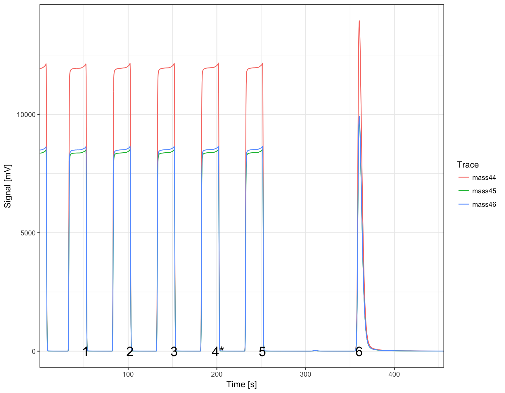
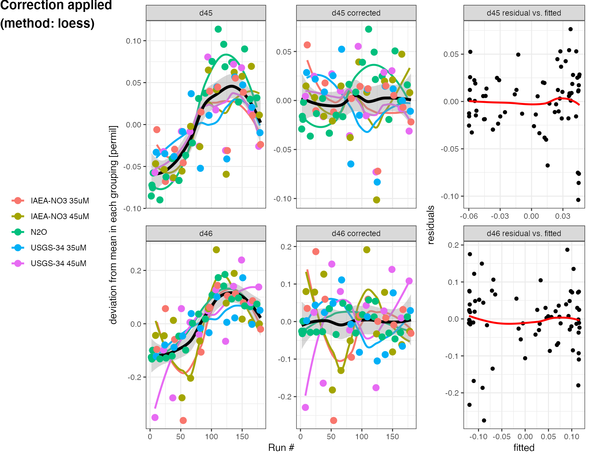

N2O data reduction tutorial
Sebastian Kopf
2017-11-30
Tutorial
This tutorial introduces the isorunN2O packages and provides examples of how it works and can be used. Plese install isorunN2O following the instructions on GitHub, the newest version of this tutorial can always be loaded up as a vignette directly in R by calling vignette("N2O_data_reduction_tutorial") in the command line.
Loading the package
To work with the isorunN2O package, you can now simply load it in any active R session using the command library(isorunN2O). It automatically loads several packages used for working with data frames, plotting and interactive plots (type ?dplyr, ?ggplot or ?plotly to access the help for these packages from within RStudio).
library(isorunN2O)Loading example data
The package includes a sample data set (test_run) to work with for testing and demonstration purposes. Because the original data files would be too big to include, it is stored as the cached compacted data set that the load_run_folder command creates from the raw data files. When you run this on your own data sets, simply change the data_folder to point to where you keep your files, e.g. data_folder <- file.path("MAT", "results", "my_data") or look at the ?load_run_folder help for more information.
data_folder <- system.file("extdata", package = "isorunN2O")
iso_files <- load_run_folder(file.path(data_folder, "test_run"))## Loading data from cached file at /Library/Frameworks/R.framework/Versions/3.4/Resources/library/isorunN2O/extdata/test_run/test_run.RDataRaw data
The iso_files variable now holds all your raw data, you can look at the names of all the loaded files by running the following (here only the first 5 for brevity, also note that we’re using the %>% pipe operator to pass output from one function to the next, which might look a little strange at first but makes it more readable further on):
names(iso_files) %>% head(n=5) ## [1] "MAT25392080_P02E_run02_Conditioner-0000.dxf"
## [2] "MAT25392081_P02E_run02_N2O-0000.dxf"
## [3] "MAT25392082_P02E_run02_N2O-0000.dxf"
## [4] "MAT25392083_P02E_run02_N2O-0000.dxf"
## [5] "MAT25392084_P02E_run02_N2O-0000.dxf"You can use the file names to take a look at specific chromatograms (note that the sample data set only has the full chromatograms loaded for the first file). This is really part of the functionality in the ?isoread package so if you’d like to explore the chromatograms more, I recommend looking at the isoread vignettes for additional information: browseVignettes("isoread").
iso_files[["MAT25392080_P02E_run02_Conditioner-0000.dxf"]]$make_ggplot()
Data processing step 1 (first look)
In the first step, we pull out the data tables from the raw data, parse the file names to put the different files into different categories, pull out only the N2O peak (no need for the references) and focus on the main columns we are interested in. Everything is chained together with the pipe %>% operator for better readability. Info messages form each function will provide feedback on what happened at each step.
df.raw <- iso_files %>%
# pull out the data summary from the raw isodat file:
get_isodat_data_tables() %>%
# derive file categories:
parse_file_names() %>%
# discard the reference peaks:
select_N2O_peak( c(360, 370)) %>%
# focus on the columns we care about:
rename(d45 = `d 45N2O/44N2O`, d46 = `d 46N2O/44N2O`, area = `Intensity All`) %>%
# select which columns to keep:
select_columns(folder, date, analysis, run_number, category, name, volume, area, d45, d46) ## INFO: Isodat data tables from 185 files with a total number of 1108 peaks successfully aggregated.## INFO: Parsed 185 file names into new columns for analysis 'name', 'category' and 'run_number'.
## Found categories P02E (564x), IAEA-NO3 (168x), USGS-34 (168x), N2O (138x), DPR (36x), Background (12x), LNSW (11x), Conditioner (6x), NO (5x)## INFO: 183 N2O peaks found in 185 files (at retention time 360 - 370s), 925 other peaks discarded.## NOTE that no N2O peak was found in the following files (check retention time if there should be one):
## MAT25392086_P02E_run02_LNSW Blank-0000.dxf, MAT25392200_P02E_run02_NO SAMPLE-0000.dxf## INFO: Selecting 10 columns (folder, date, analysis, run_number, category, name, volume, area, d45, d46), discarding 35 (file, Component, Start, Rt, End, Ampl 44, Ampl 45, Ampl 46, Nr., rIntensity 44, rIntensity 45, rIntensity 46, rIntensity All, Intensity 44, Intensity 45, Intensity 46, rR 45N2O/44N2O, rR 46N2O/44N2O, Is Ref.?, R 45N2O/44N2O, Ref. Name, rd 45N2O/44N2O, R 46N2O/44N2O, rd 46N2O/44N2O, R 18O/16O, 18O/16O, AT% 15N/14N, R 15N/14N, 15N/14N, AT% 18O/16O, R 17O/16O, d 17O/16O, comment, preparation, Sample Dilution).Now to get a sense for what the data looks like, let’s look at the first couple of rows. To look at the complete data frame, you can always call View(df.raw) or double click on the name in the Environment tab on the upper right.
df.raw %>% head(n=5) ## # A tibble: 5 x 10
## folder date analysis run_number category name
## <chr> <dttm> <dbl> <int> <chr> <chr>
## 1 test_run 2015-03-03 10:55:04 92080 1 Conditioner Conditioner
## 2 test_run 2015-03-03 11:04:44 92081 2 N2O N2O
## 3 test_run 2015-03-03 11:14:22 92082 3 N2O N2O
## 4 test_run 2015-03-03 11:24:00 92083 4 N2O N2O
## 5 test_run 2015-03-03 11:33:38 92084 5 N2O N2O
## # ... with 4 more variables: volume <dbl>, area <dbl>, d45 <dbl>,
## # d46 <dbl>Additinally, isorunN2O provides a couple more convience functions for inspecting the data (together with the very helpful function group_by from the dplyr package). To look at the data in table format, you can use ?generate_data_table (see help for details). Additional formatting options for data tables are provoided by the function kable from the knitr package, which we’ll use here to get column style output.
df.raw %>% group_by(category) %>% generate_data_table(area, d45, d46) %>% knitr::kable()| category | n | area.avg | area.sd | d45.avg | d45.sd | d46.avg | d46.sd |
|---|---|---|---|---|---|---|---|
| P02E | 94 | 87.1925131 | 1.1439070 | 6.1176044 | 0.5982852 | -2.7215962 | 0.5012561 |
| IAEA-NO3 | 28 | 86.3229634 | 1.2347195 | 5.3311431 | 0.1064835 | 19.1541208 | 0.2589260 |
| USGS-34 | 28 | 86.4001330 | 1.2574264 | -2.1204132 | 0.0481770 | -31.8621068 | 0.1768753 |
| N2O | 23 | 81.7609708 | 1.8756106 | 0.6390149 | 0.0648109 | -0.7990613 | 0.1078678 |
| DPR | 6 | 90.0835241 | 1.4504975 | 5.3623376 | 0.0496230 | -3.1140484 | 0.1894474 |
| Background | 2 | 0.2558576 | 0.0002725 | 11.8768058 | 0.5723399 | -1.1343584 | 1.3324915 |
| Conditioner | 1 | 80.6575200 | NA | 0.6003229 | NA | -0.8004934 | NA |
| LNSW | 1 | 0.3274756 | NA | 14.2428599 | NA | 12.4141439 | NA |
df.raw %>% group_by(category, name) %>% generate_data_table(area, d45, d46, cutoff = 3)%>% knitr::kable()| category | name | n | area.avg | area.sd | d45.avg | d45.sd | d46.avg | d46.sd |
|---|---|---|---|---|---|---|---|---|
| N2O | N2O | 23 | 81.76097 | 1.8756106 | 0.6390149 | 0.0648109 | -0.7990613 | 0.1078678 |
| IAEA-NO3 | IAEA-NO3 35uM | 13 | 86.87103 | 0.9617826 | 5.3319129 | 0.1445695 | 19.1446368 | 0.3419803 |
| IAEA-NO3 | IAEA-NO3 45uM | 13 | 86.02042 | 0.9624278 | 5.3435809 | 0.0535936 | 19.1994459 | 0.1441963 |
| USGS-34 | USGS-34 35uM | 13 | 87.01429 | 1.1653868 | -2.1001361 | 0.0383784 | -31.7350374 | 0.0802141 |
| USGS-34 | USGS-34 45uM | 13 | 85.66835 | 1.0505273 | -2.1292964 | 0.0480026 | -31.9908451 | 0.1685208 |
| DPR | DPR | 6 | 90.08352 | 1.4504975 | 5.3623376 | 0.0496230 | -3.1140484 | 0.1894474 |
For a visual first look at the data, you can use ?plot_overview, which generates a ggplot:
df.raw %>% plot_overview(d45)or a little bit more elaborate specifiying in more detail how to color and panel the overview plot:
df.raw %>% plot_overview(
d45, size = area,
color = ifelse(category %in% c("IAEA-NO3", "USGS-34"), name, category),
panel = factor(category, levels = c("N2O", "IAEA-NO3", "USGS-34")))or as an interactive plot (mouse-over information and zooming), which is a little easier for data exploration (make_interactive() makes the last plot interactive by default):
Data processing step 2 (continued)
From the first look it is clear that there are couple of things we need to consider, there is one sample that was marked as questionable during injection (#68) which we’d like to exclude for now, there were also a couple of samples that were controls rather than standards and should go into their own category, and while we’re at it we’ll also identify the blanks. Lastly, it appears there is some drift so we will want to evaluate that.
Categories
df.cat <- df.raw %>%
change_category(name %in% c("IAEA-NO3 37 uM ctrl", "USGS-34 37 uM ctrl"), "control") %>%
change_category(run_number == 68, "excluded") %>%
change_category(name == "LNSW Blank", "blank")## INFO: the category of 4 analyses was changed to 'control' (by applying criteria 'name %in% c("IAEA-NO3 37 uM ctrl", "USGS-34 37 uM ctrl")')## INFO: the category of 1 analyses was changed to 'excluded' (by applying criteria 'run_number == 68')## INFO: the category of 1 analyses was changed to 'blank' (by applying criteria 'name == "LNSW Blank"')Drift correction
The evaluate_drift function provides a number of different strategies for evaluating drift using different correction methods, here we’re trying a polynomial fit (method = "loess") and are correcting with the standards as well as N2O. We also want to see a summary plot of the drift using plot = TRUE (the default), which will plot the drift polynomials on top of the original data (normalized to average isotope values in each group) and the residuals after applying the correction. For details look at the ?evaluate_drift help. The drift correction stores the drift corrected values in d45.drift and d46.drift.
df.drift <- df.cat %>%
evaluate_drift(d45, d46, correct = TRUE, plot = TRUE,
correct_with = category %in% c("USGS-34", "IAEA-NO3", "N2O"),
method = "loess")## INFO: 183 N2O analyses drift corrected (new data columns 'd45.drift' & 'd46.drift', and parameter 'p.drift' added)
## Used the 'loess' method with included categories 'N2O, USGS-34, IAEA-NO3'.
## Residual sum of squares: 0.280 (d45), 0.720 (d46)
## Standard deviations in d45/d46 before and after drift correction, by groupings:
## Before: 0.04/0.14 (IAEA-NO3 35uM), 0.05/0.14 (IAEA-NO3 45uM), 0.06/0.11 (N2O), 0.04/0.08 (USGS-34 35uM), 0.05/0.17 (USGS-34 45uM)
## After: 0.03/0.11 (IAEA-NO3 35uM), 0.04/0.11 (IAEA-NO3 45uM), 0.03/0.03 (N2O), 0.04/0.07 (USGS-34 35uM), 0.03/0.12 (USGS-34 45uM)
Let’s take a quick look how we’re doing after drift correction:
df.drift %>% plot_overview(d45.drift, panel = factor(category, levels = c("N2O", "IAEA-NO3", "USGS-34")))
Data processing step 3 (continued)
Now that we’re drift corrected, time to switch to \(\delta^{15}N\) and \(\delta^{18}O\) space and calibrate against our standards.
O17 correction
We’re doing the O17 correction here (instead of before the drift) but it is a matter of discussion whether drift correction or O17 correction should be applied first. The O17 correction introduces new columns d15.raw and d18.raw.
df.O17 <- df.drift %>%
correct_N2O_for_17O(d45.drift, d46.drift) %>%
select_columns(-d45, -d45.drift, -d46, -d46.drift) # no longer needd, remove these columns## INFO: 183 N2O analyses were corrected for 17O (new columns 'd15.raw' and 'd18.raw', and parameter 'p.17Ocor' added).
## Correction effects: mean d45 = 4.099 with resulting d15 = 4.409, mean d46 = -3.495 with resulting d18 = -3.586 [permil]
## Correction term constants: k46 = 1.0081, k45 = -0.0157, k17 = -0.0006, k45x45 = -0.0075, k45x17 = -0.0007, k17x17 = 0.0001## INFO: Selecting 12 columns (folder, date, analysis, run_number, category, name, volume, area, p.drift, p.17Ocor, d15.raw, d18.raw), discarding 4 (d45, d46, d45.drift, d46.drift).Calibration
Last steps are caculating the background (see ?calculate_background), calculating concentrations (see ?calculate_concentrations) and then calibrating \(\delta^{15}N\) and \(\delta^{18}O\) (see ?calibrate_d15 and ?calibrate_d18). Note that the background calculation is not currently used for calibration since only multi-point calibration is implemented.
df.cal <- df.O17 %>%
calculate_background(area) %>%
calculate_concentrations(area, volume, conc_pattern = "(\\d+)uM",
standards = category %in% c("USGS-34", "IAEA-NO3")) %>%
calibrate_d15(d15.raw, standards = c(`USGS-34` = -1.8, `IAEA-NO3` = 4.7)) %>%
calibrate_d18(d18.raw, cell_volume = 1.5, standards = c(`USGS-34` = -27.93, `IAEA-NO3` = 25.61))## INFO: the category of 2 analyses was changed to 'background' (by applying criteria 'name %in% c("background", "Background")')## INFO: bacterial background identified and area stored in parameter column 'p.bgrd': 0.256## INFO: NOx concentrations and injection amounts (new columns 'conc' and 'amount') calculated from 35uM (25x) & 45uM (26x) standards
## Parameter columns mass spec signal 'p.yield' (4.346) and effective 'p.run_size' (19.87) added.## INFO: d15 values calibrated (new columm 'd15.cal') using USGS-34 (-1.8) & IAEA-NO3 (4.7) --> stored in 'p.d15_stds'
## Regression: -0.4+-0.1 (d15/A, p=0.01), NA (1/A, p=NA), 0.434+-0.006 (intercept, p=2e-52)
## Inferred reference gas isotopic composition: -0.434+-0.006 permil (added as 'p.ref_gas_d15')
## Inferred bacterial background area: 0.4+-0.1 (added as 'p.bgrd_area') & isotopic composition: NA permil (added as 'p.bgrd_d15')## INFO: d18 values calibrated (new columm 'd18.cal') using USGS-34 (-27.93) & IAEA-NO3 (25.61) --> stored in 'p.d18_stds'
## Effective concentration dependence of calibration regression taken into account.
## Parameter columns for calibration (measured vs. true * concentration):
## 'p.d18_m_true' (0.896), 'p.d18_m_conc' (-0.194), 'p.d18_m_true:conc' (0.006) and intercept 'p.d18_b' (-3.363) added.Summary
At the end of the data processing, there are a couple of ways to summarize the data, including the generate_data_table introduced earlier (here used to compare the raw vs. calibrated values with different groupings), but also generate_parameter_table, which summarizes all the parameters recorded from the data processing calls:
df.cal %>% group_by(category) %>%
generate_data_table(cutoff = 3, d15.raw, d15.cal, d18.raw, d18.cal) %>% knitr::kable() | category | n | d15.raw.avg | d15.raw.sd | d15.cal.avg | d15.cal.sd | d18.raw.avg | d18.raw.sd | d18.cal.avg | d18.cal.sd |
|---|---|---|---|---|---|---|---|---|---|
| P02E | 94 | 6.5044991 | 0.6072631 | 6.0956796 | 0.6098144 | -2.845659 | 0.4768841 | 2.588570 | 0.5106479 |
| USGS-34 | 26 | -1.3581482 | 0.0376199 | -1.8000000 | 0.0377780 | -32.081713 | 0.1617086 | -27.930000 | 0.1296491 |
| IAEA-NO3 | 25 | 5.1146585 | 0.0380937 | 4.7000000 | 0.0382537 | 19.274543 | 0.1063017 | 25.610000 | 0.1102934 |
| N2O | 23 | 0.6998517 | 0.0301474 | 0.2666459 | 0.0302740 | -0.805518 | 0.0345544 | NaN | NA |
| DPR | 6 | 5.7230744 | 0.0368411 | 5.3109720 | 0.0369958 | -3.241075 | 0.1830612 | 2.197023 | 0.2000344 |
| control | 4 | 1.8147404 | 3.7141761 | 1.3862185 | 3.7297799 | -6.442986 | 29.4643097 | -1.224277 | 30.7283504 |
df.cal %>%
generate_parameter_table() %>% knitr::kable() | p.drift | p.17Ocor | p.bgrd | p.run_size | p.yield | p.d15_stds | p.ref_gas_d15 | p.ref_gas_d15.err | p.bgrd_area | p.bgrd_area.err | p.bgrd_d15 | p.bgrd_d15.err | p.d18_stds | p.d18_m_true | p.d18_m_conc | p.d18_m_true:conc | p.d18_b |
|---|---|---|---|---|---|---|---|---|---|---|---|---|---|---|---|---|
| loess (span: 0.75): N2O, USGS-34, IAEA-NO3 | scaling=0.52; ref 17R=0.0003799, 18R=0.0020052, 15N=0.0036782 | 0.2558576 | 19.87353 | 4.345999 | USGS-34 (-1.8) & IAEA-NO3 (4.7) | -0.4343213 | 0.0057627 | 0.3613413 | 0.1408902 | NA | NA | USGS-34 (-27.93) & IAEA-NO3 (25.61) | 0.8964205 | -0.1944175 | 0.0063333 | -3.362592 |
And of course visually, e.g. in an interactive plot with additional mouseover info (text = make_itext...):
df.cal %>% plot_overview(
d15.cal, size = amount,
text = make_itext(name, d15 = round(d15.cal, 2), d18 = round(d18.cal, 2), amount = round(amount,3)),
color = ifelse(category %in% c("IAEA-NO3", "USGS-34"), name, category),
panel = factor(category, levels = c("N2O", "IAEA-NO3", "USGS-34"))
) %>%
make_interactive()And some simpler single data plots (using filter from the ddply package) to look specifically at the samples and DPR control.
df.cal %>% filter(category %in% c("P02E", "DPR")) %>%
plot_overview(d15.cal, d18.cal, color = paste(category, panel)) %>%
make_interactive() Additional customization is also possible using ggplot functionality, for example can use the shape parameter for symbol differentiation, and to visualize all the standards’ key values in separate panels, can make use of facet_wrap:
(df.cal %>% filter(category %in% c("IAEA-NO3", "USGS-34")) %>%
plot_overview(
d15.cal, d18.cal, amount, color = name, shape = name,
text = make_itext(name, `#` = run_number,
d15 = round(d15.cal, 2),
d18 = round(d18.cal, 2))) +
facet_wrap(panel ~ category, scales = "free", ncol = 2)) %>%
make_interactive()Export data
At any point during the process, if you like to export data as excel, this is easy with the openxlsx package (here using a couple of filter options in select to skip parameters and raw values, and using arrange to sort the data):
df.cal %>%
select(-starts_with("p."), -ends_with(".raw"), -ends_with(".drift"), d15 = d15.cal, d18 = d18.cal) %>%
arrange(category, name) %>%
openxlsx::write.xlsx(file = "export.xlsx")